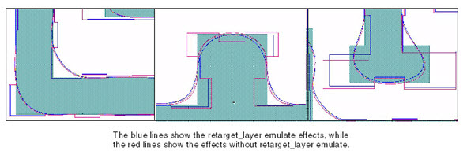

Use the retarget_layer
“emulate” option with the generated curve layer. This helps reduce ripples
near corners especially at concave corners. The setlayer curve produces
a more realistic target, which often results in less aggressive
corner correction. However, you must still carefully tune your fragmentation
and OPC recipes.
Figure 1 shows the effects of using retarget_layer emulate.
Figure 1. Effects of retarget_layer emulate
and setlayer curve
You can also turn off retargeting through a
tagging script. For example:
NEWTAG topological inside_edge M1 no_retarget_region \
-out frag_ignore_retarget
TARGET_FUNCTION 1 constant 0.0
TARGET_CONTROL frag_ignore_retarget 1